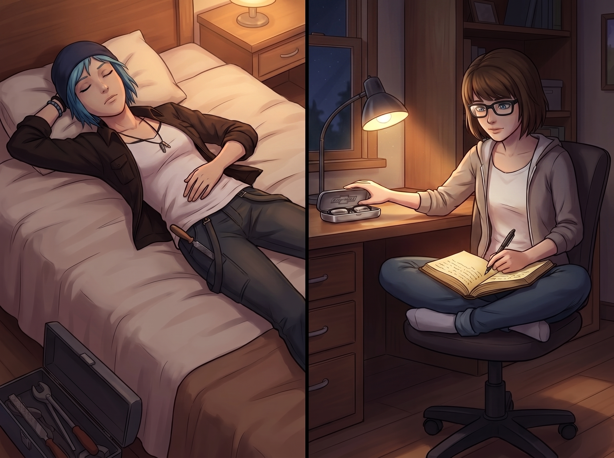
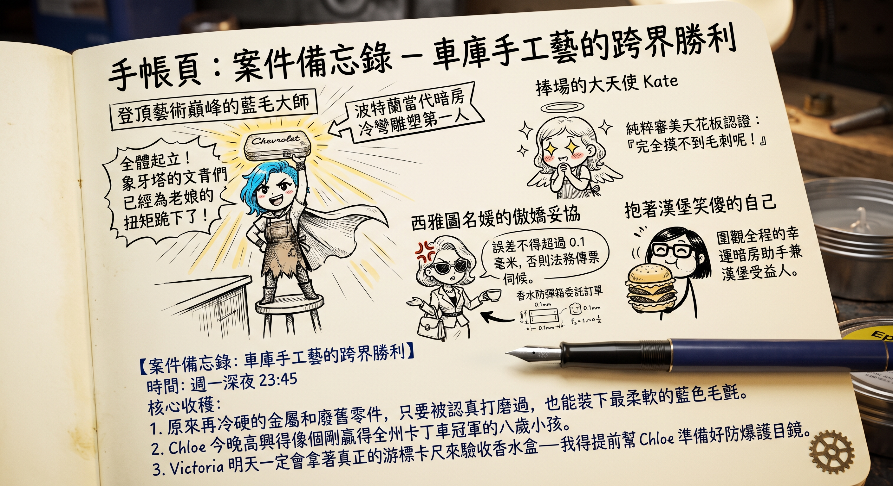

車庫手工藝的跨界勝利



深夜十一點半，Loft 二樓的書桌前，那盞暖黃色的小檯燈再次亮起。
客廳裡的漢堡香氣已經被晚風吹散，樓下只剩下冰箱低微的運轉聲。Chloe 已經仰面躺在大床上睡得不省人事，嘴角還帶著一絲得意的笑意，工裝褲口袋裡甚至還硬塞著那把沒放回工具箱的小銼刀。
Max 盤腿坐在旋轉椅上，戴著那副洗完澡後重新擦拭乾淨的黑框眼鏡。她伸手摸了摸擺在檯燈旁、泛著冷冽光澤的金屬雪佛蘭眼鏡盒，嘴角揚起溫柔的弧度，翻開了手帳本全新的一頁。
黑色勾線筆尖在泛黃的紙頁上沙沙作響，迅速勾勒出一組活靈活現的客廳四格簡筆畫：
一、登頂藝術巔峰的藍毛大師
畫面中央是一個單腳踩在中島台高腳凳上的 Q 版 Chloe。Max 給她畫了一件誇張的披風，雙手叉腰，頭頂飄著一個巨大的自封頭銜：「波特蘭當代暗房冷彎雕塑第一人」。她手裡高高舉著發光的眼鏡盒，背後放射出如同神聖降臨般的金色光芒線條，對白框裡寫著狂草：「全體起立！象牙塔的文青們已經為老娘的扭矩跪下了！」
二、捧場的大天使 Kate
在 Chloe 身旁，繫著小圍裙的 Kate 正雙手合十捧在胸前，眼睛被畫成了兩顆閃閃發亮的小星星，頭頂飄著標誌性的小光環。身旁的批註寫著：「純粹審美天花板認證：『完全摸不到毛刺呢！』」
三、西雅圖名媛的傲嬌妥協
沙發邊的 Victoria 戴著大墨鏡，端著骨瓷茶杯，腦門上頂著三個極度糾結的青筋符號。一條箭頭從她的手提包直指 Chloe 的鼻子，拉出一張滿是微積分和標註尺寸的「香水防彈箱委託訂單」。對白框裡用工整的花體字寫著：「誤差不得超過 0.1 毫米，否則法務傳票伺候。」
四、抱著漢堡笑傻的自己
角落裡畫著一個戴著黑框眼鏡、嘴裡塞滿雙倍芝士漢堡、兩頰鼓得像倉鼠一樣的火柴人 Max，頭頂飄著一行字：「圍觀全程的幸運暗房助手兼漢堡受益人。」
在簡筆畫的正下方，Max 換上深藍色墨水筆，認真寫下了今晚的日記尾注：
【案件備忘錄：車庫手工藝的跨界勝利】
時間：週一深夜 23:45
核心收穫：
原來再冷硬的金屬和廢舊零件，只要被認真打磨過，也能裝下最柔軟的藍色毛氈。
Chloe 今晚高興得像個剛贏得全州卡丁車冠軍的八歲小孩。
Victoria 明天一定會拿著真正的游標卡尺來驗收香水盒——我得提前幫 Chloe 準備好防爆護目鏡。
寫完最後一個字，Max 輕輕吹乾墨水，從抽屜裡拿出一枚小小的黃銅齒輪貼紙，端端正正貼在了日記頁角。
她合上手帳本，摘下眼鏡放進身旁那個沉甸甸的盒子裡。「咔噠」一聲清脆咬合，在安靜的深夜裡顯得格外踏實。Max 關掉檯燈，鑽進帶著熟悉薄荷香氣的被窩，在波特蘭溫暖的初夏夜色裡沉沉睡去。